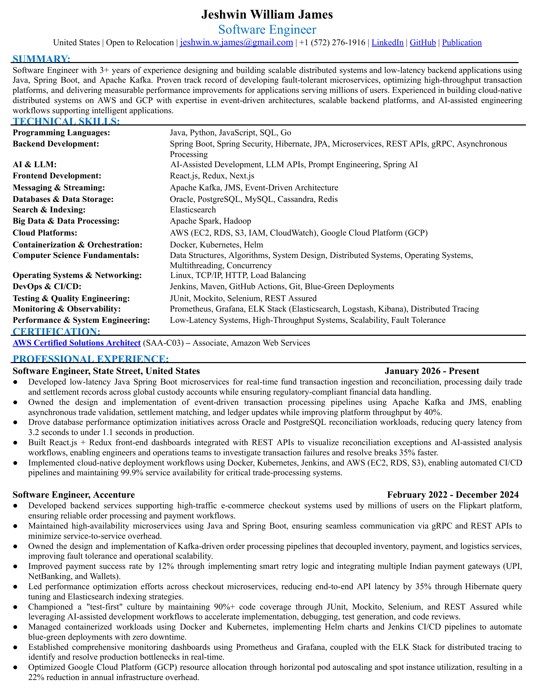
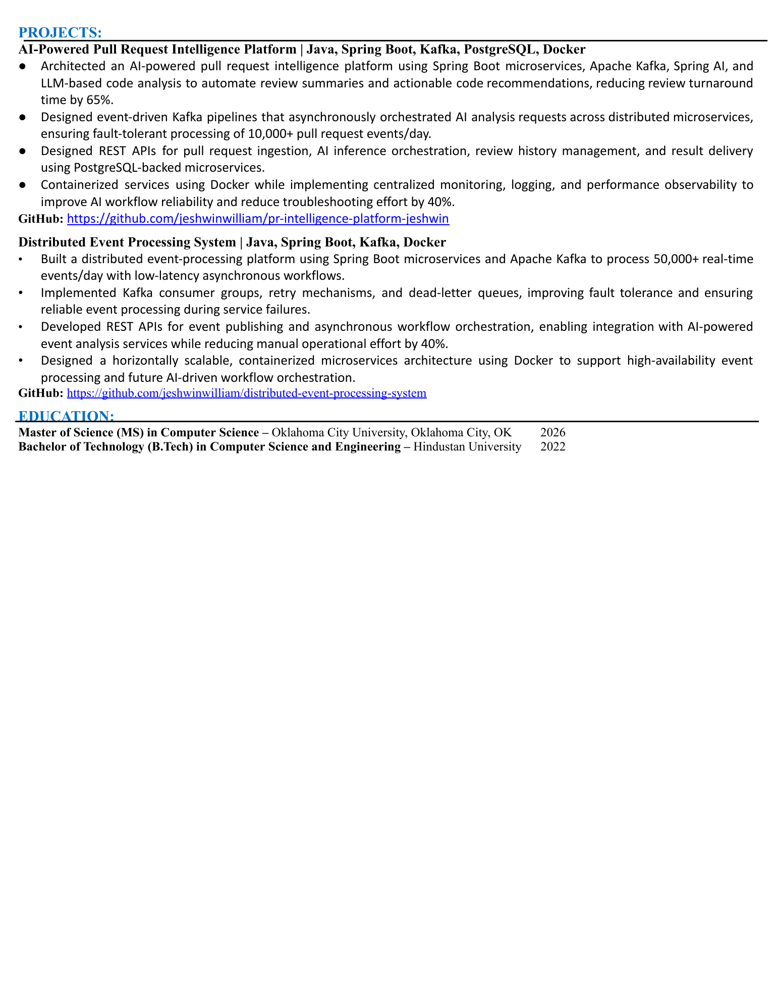

Backend
Java, Spring Boot, REST APIs, gRPC, Spring Security, Hibernate, JPA
Distributed Systems Engineer
Software Engineer specialising in distributed systems, event-driven architecture, Java, Spring Boot, Kafka, and cloud-native infrastructure. I build reliable backend platforms that scale.
Public repositories, architecture-heavy builds, and ongoing engineering work.
Career LinkedInExperience, credentials, and professional network.
Publication Springer PublicationPublished work on IMEI-based mobile payment security.
Direct EmailReach out for roles, collaborations, speaking, or technical consulting.
Paper Publication DetailsFull citation, Springer record, publication context, and research impact.
Core Skills
Java, Spring Boot, REST APIs, gRPC, Spring Security, Hibernate, JPA
Kafka, JMS, asynchronous workflows, retry strategies, dead-letter queues
AWS, GCP, Docker, Kubernetes, Helm, CI/CD, blue-green deployments
PostgreSQL, Oracle, Redis, Prometheus, Grafana, ELK, tracing
Architecture Case Study
A generalized Kafka-driven recovery pattern based on the event processing platform work: ingestion, fan-out, retry isolation, dead-letter handling, and operational visibility.
Event-driven review orchestration from pull-request ingestion through analysis, persistence, and resilient result delivery.
Experience
Built low-latency fund transaction and reconciliation services with Java, Spring Boot, Kafka, JMS, Oracle, PostgreSQL, Docker, Kubernetes, Jenkins, and AWS.
Delivered backend systems for large-scale checkout and payment flows using Java, Spring Boot, Kafka, Cassandra, MySQL, Redis, Elasticsearch, Docker, Kubernetes, Jenkins, and GCP.
Featured Builds
AI-assisted pull request analysis platform with event-driven review orchestration, persistent review history, and observability-first service design.
Engineering Highlights
Order, payment, inventory, and logistics workflow architecture with Kafka-driven orchestration, idempotent processing, and resilient failure recovery across service boundaries.
Engineering Highlights
Security-focused project based on IMEI-driven device verification to strengthen mobile payment authentication and trust.
Engineering Highlights
System Design Library
Each case study focuses on requirements, event flow, key decisions, trade-offs, and failure handling instead of generic interview diagrams. This is the strongest way to show how I think about backend systems at scale.
API gateway, order service, payment, inventory, and logistics workflows connected by Kafka with idempotency, retries, and saga-style recovery.
GitHub webhook ingestion, Kafka queues, analysis workers, AI-assisted review services, and resilient result delivery with observability and rate limiting.
Trade ingestion, validation, ledger updates, duplicate detection, and reconciliation workflows designed for high-integrity financial operations.
Publication
Peer-reviewed conference paper published in Springer's Advances in Intelligent Systems and Computing proceedings for ICSADL 2022, focused on a stronger mobile payment security model centered around IMEI-based device verification.
W. Jeshwin et al., “Improved Security on Mobile Payments Using IMEI Verification,” Sentiment Analysis and Deep Learning, Springer, 2023, pp. 183-193.
Credentials
Issued March 2026. Aligns with cloud-native architecture, reliability, and scalable platform design.
Oklahoma City University, Oklahoma City, Oklahoma, United States.
Hindustan University, building the base for systems, software, and engineering fundamentals.
Contact
I am especially interested in high-throughput services, event-driven architecture, cloud infrastructure, and developer platforms where reliability and performance matter.
Resume Viewer

